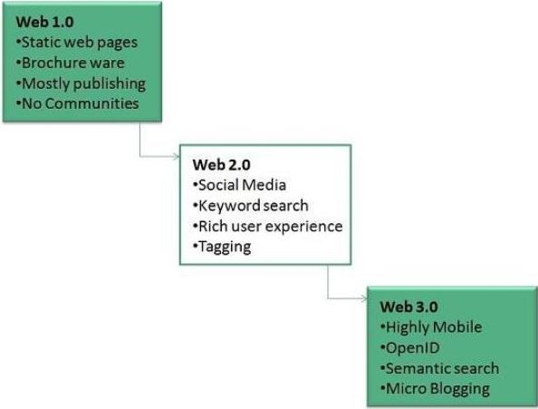

Evolution of The Internet
From its modest beginnings as a platform for study to its transformation into an essential component of contemporary society, the evolution of the internet has been a remarkable journey. The Advanced Research Projects Agency (ARPANET) of the United States Department of Defence created the Internet in the late 1960s. Important developments during the following few decades influenced how the internet changed. The creation of TCP/IP protocols in the 1970s created the groundwork for a standardized method for devices to interact across various networks, which served as a foundation for the internet we know today.
A tipping point was reached with the internet's commercialization in the 1990s and early 2000s, which sparked the dot-com boom and subsequent crisis. With the ability to connect from anywhere at any point in time, mobile technology increased the development of the Internet. Today, the internet has evolved into a vast ecosystem that includes everything from social networking, e-commerce and cloud computing to the Internet of Things (IoT).
